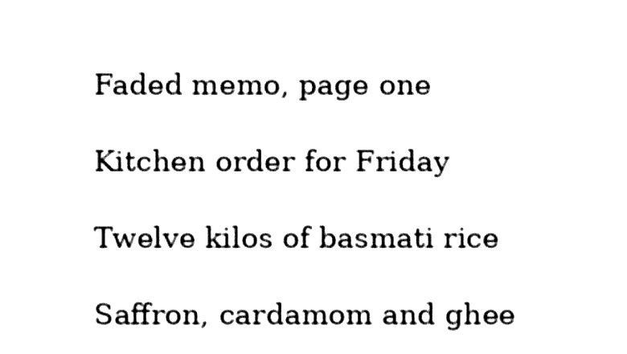
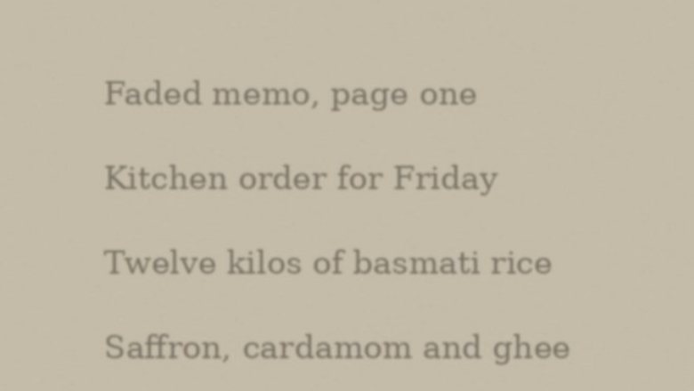

Change the words in any PDF.
Click a line and retype it, the way you would in a document. When you save, the old words are gone from the file, not hidden under a box. InkLeaf PDF is free, open source and works without the internet.
- Free, every tool
- Works offline
- No account
- Open source
The real text, not a patch on top
Most free editors put a white box over old words and type new ones on top, so the old text is still in the file. InkLeaf PDF rewrites the line itself, in a matching font.
One app for the whole job
Everything you'd otherwise need three or four programs for, and none of it behind a paywall.
Change the text
Retype existing lines, add text anywhere, or redact. Hindi, Arabic, Tamil and other scripts are typed and saved properly. Redacted text is deleted from the file, not hidden behind a black box.
Fill and sign
Fill in forms, then draw, type or upload a signature. A photo of a paper signature loses its white background, and saved signatures are ready next time.
Mark it up
Pen, highlighter, shapes, comments, stamps and pictures, all movable and editable later.
Pages and files
Merge, split, reorder and rotate. Compress, convert Office files both ways, and compare two versions.
Share securely
Lock a copy with a code, or to one person's computer, and send it with a pickup code.
Fix bad scans
Recognise the text in scanned pages, in 56 languages, so you can search and copy it. Faded grey photocopies come back with whiter paper and darker, sharper letters. Drag across the scan to compare.


Scanners
Scan straight into a PDF from your scanner or all-in-one printer, with no extra software.
AI, if you want it
Summaries, translation and questions about the PDF, with a built-in AI that runs on your own computer.
Phone and computer
An Android app built for reading first. Pair it once and send PDFs both ways over your Wi-Fi.
What it sends, and when
Nothing about you, ever. There's no account, no analytics and no crash reports. These are the only times InkLeaf PDF goes online at all.
| When you | What goes where |
|---|---|
| Open, edit or save a PDF | Nothing. Your files stay on your device. |
| Send a PDF to your phone | It goes straight to the phone over your Wi-Fi, encrypted. Never through the internet. |
| Check for updates | A request to GitHub for the latest version number. |
| Use a language that isn't built in | The language pack is downloaded once from jsDelivr. |
| Use the AI tools | With the built-in AI, nothing leaves your computer. With a service you picked, the document's text goes to it with your own API key. |
| Turn a web page into a PDF | A normal visit to that page, in a private window that's cleared afterwards. |
| Send with a pickup code | On your Wi-Fi, straight to the other computer. Otherwise the file, encrypted first, waits on the InkLeaf PDF relay until it's picked up (7 days at most). The relay never sees the code that unlocks it. |
The full privacy policy is short and in plain English.
On your computer and your phone
Mac, then iPhone and iPad, are on the roadmap.
Fix that PDF now
Free, with every tool included. No account to make and nothing to pay, today or later.